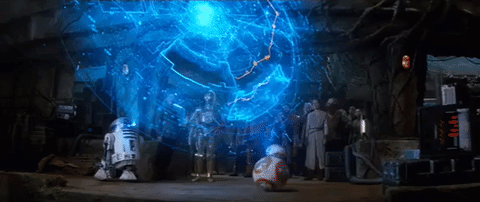
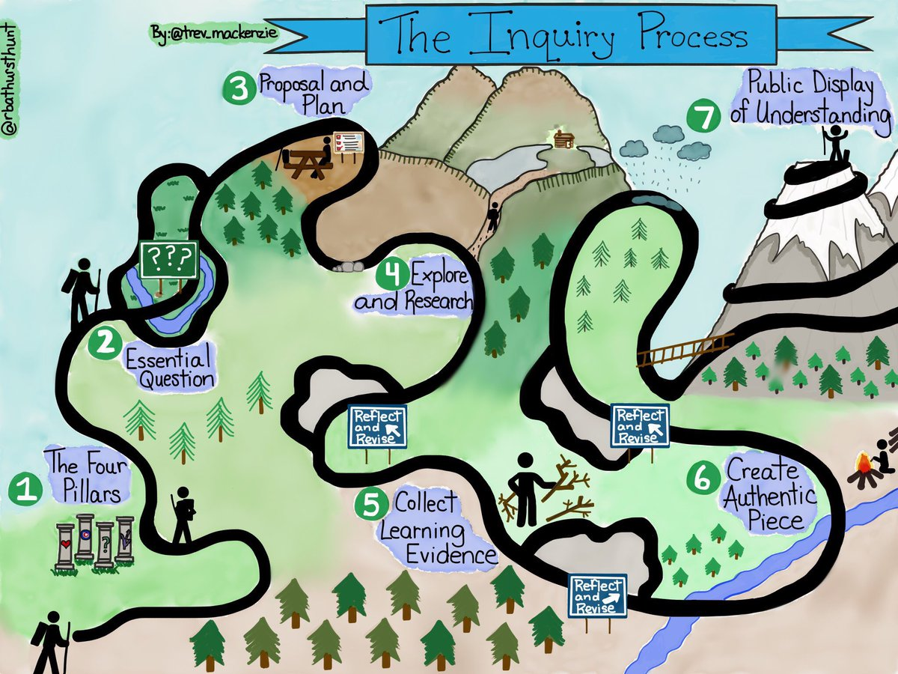

CWI 101

To follow along, load this in your browser: https://www.ryanpatrickrandall.com/talks/cwi101.html
Created by Ryan P. Randall
Hello!
I'm Ryan Randall, from the library!
Today's plan:
- Build on the badges
- Prep for your assignments
- Focus on SIFT Moves
What have you already used with CWI Library?
- Badges?
- Printing?
- Textbook collection?
- Computers or laptops?
- Articles or books?
- Online chat?
- Anatomical models?
Have your kids used the children's section?

Did you come dressed up for Halloween?
Read from our Popular Fiction sections?

Here's some more library resources!
- Databases—including movies!
- Research Guides that help you know where to start!
- Schedule an Appointment with a Librarian—you've already paid for it!
- Book a Group Study Space—we've got four of them!
Source Evaluation & the SIFT Moves
"Don't Hit Any Other Cars"
- Well-meaning advice isn't always useful. — What's a better way to help drivers learn how to drive?
- Make the SIFT moves as natural as "look over your shoulder before you change lanes!"
SIFT Moves Help You Get Context, Fast!
- Stop! — Don't waste your time reading junk.
- Investigate the Source — Check it on Wikipedia. Really!
- Find better coverage — Are these "facts" also in the news sections of the NY Times, the Associated Press, the Guardian, CNN, or other reputable venues?
- Trace claims, quotes, and media back to the original context — CWI Library can help you find original sources. So can Google Scholar!
CRAAP test criteria
- Currency
- Relevance
- Authority
- Accuracy
- Purpose
Blakeslee, S. (2004). The CRAAP test.
Not a "Test"—It's Guidelines

- The CRAAP criteria help you decide where to place your trust. They're not a simple litmus test.
Currency

- When was this source published?
- The timeframe of some information is crucial.
Relevance

- Why is this right for this assignment?
- Are its approach and depth suitable for your purposes?
Authority

- Who wrote this?
- Do they have appropriate expertise on this subject?
Accuracy

- How does this source support its claims?
- Can you check where the authors got their facts & examples?
Purpose

- Why was this written?
- Is the author trying to benefit personally from this?
CRAAP test criteria
- Currency
- Relevance
- Authority
- Accuracy
- Purpose
Blakeslee, S. (2004). The CRAAP test.
Map Your Research Process

Take two minutes to write an overview of how and where you research things.
What did your overview include?


What's this about "Fake News?"
Facebook Echo Chambers
- Blue Feed, Red Feed from the Wall Street Journal
Fake News Examples
Let's Break "Fake News" Down
- misinformation unintentionally false
- disinformation intentionally false
- propaganda false and usually emotionally manipulative
How to Spot Fake News
This handout could help!
Why Does Fake News Exist?
This LA Times article suggests it's most often about money.
What are the consequences of fake news?
Well, at Comet Pizza, "Fake News Brought Real Guns"
For more…
We could talk a lot more about this!
UW even has a whole class about reasoning in a digital world. Check it out if you care about this stuff.
How did this go? Let me know at https://bit.ly/cwilif!
Keep in touch with the CWI Library
Please schedule an appointment with a CWI Librarian if you'd like further research assistance.
You can also get help from the College of Western Idaho Libraries through our online chat, our FAQ pages, calling or texting us, and email!
Thank you for your time!
Sources
"Pulling a book off the shelf" photo by Bennington College's Crossett Library with a CC BY-NC-SA 2.0 license.Blakeslee, S. (2004). The CRAAP test. LOEX Quarterly, 31(3), 6-7. Retrieved from https://commons.emich.edu/loexquarterly/vol31/iss3/4.
"Purpose" photo by Seth Sawyers with a CC BY 2.0 license and given some minimal filtering by Ryan. "Reflect • Learn • Connect" photo by Seattle Community Colleges with a CC BY-NC-SA 3.0 license.